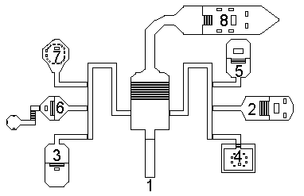

| Temple of the Moon | |
| 1. | Entrance |
| 2. | Shrine of Life |
| 3. | Shrine of Accuracy |
| 4. | Shrine of Might |
| 5. | Shrine of Endurance |
| 6. | Shrine of Speed There is a switch on the back of the shrine to to the small room. |
| 7. | Shrine of Luck |
| 8. | Shrine of the Moon |
There are more snakes in this one. There are Medusas, they can stone you but only at close range. There are some tough Druids hanging around also so I'd recommend some protection from poison, fire, and magic.
There is a plaque over the door to the Moon Shrine that reads Life above all, Accuracy before Might, Endurance before Speed, and finally Luck. This is the order to visit the shrines, to open the door, and get +5 to each of these stats for each character!
Points 2,3,4,5,6,7
There is also a letter in the small room behind the Speed shrine that someone might want, but I am not sure yet.
Leave us a messagemgrounds@hotmail.com